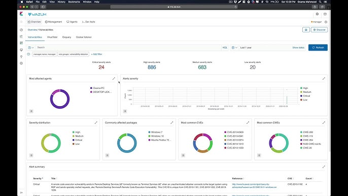

In April 2025, a critical vulnerability identified as CVE-2025-29824 was discovered in the Windows Common Log File System (CLFS) driver. This use-after-free flaw allows authorized attackers to locally elevate their privileges, posing significant security risks to affected systems (National Vulnerability Database, 2025).
The Windows CLFS driver is integral to log management. CVE-2025-29824 exploits a use-after-free condition, enabling attackers to execute arbitrary code with elevated privileges. Such vulnerabilities serve as entry points for more severe exploits, including ransomware deployments (Microsoft Security Response Center, 2025).
Detection Using Wazuh
A virtual lab was created using Proxmox with a vulnerable Windows Server instance. Wazuh, an open-source SIEM, was deployed and configured with custom rules for CVE-2025-29824 detection.
- Wazuh alerting identified anomaly on Windows Server node
- Confirmed vulnerability presence through MITRE CVE database
- Applied PowerShell-based mitigation from Vicarius
- Validated success by clearing related SIEM alerts

Mitigation Strategies

Following detection:
- Applied Microsoft patch released in April 2025.
Patch Application: The latest security updates from Microsoft were applied to address CVE-2025-29824. Microsoft had released patches on April
8, 2025, to rectify this issue .(Microsoft, CVE Details)
- Hardened the system with access control and segmentation.
System Hardening: Additional security measures, including the implementation of strict access controls and regular system audits, were
enforced to reduce the attack surface.
- Continued live monitoring using Wazuh post-patch.
Continuous Monitoring: Wazuh's monitoring capabilities were leveraged to ensure ongoing surveillance for any anomalous activities
post-mitigation.
Impact on Corporations
The exploitation of CVE-2025-29824 shows how ransomware groups rapidly weaponize zero-days. Timely patching and SIEM visibility are vital to protect enterprise environments from privilege escalation threats (The Hacker News, 2025).